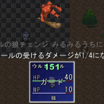

ユーザデータベース
右のようなウィンドウが表示されます。

【目標】
新しく技能（魔法）を増やします。
ここでは、HP回復とガードをあわせた技を作成します。
| 【1】 ユーザデータベース 右のようなウィンドウが表示されます。 |
|
| 【2】 「タイプ」が「技能」に なっていることを確認してください。 （もしなっていなければ、 「0:技能」をクリック） |
 |
| 【3】 「データ」の空いているところを クリックして下さい |
 |
| 【4】 「ページ１」の各項目を 入力して下さい ここでは以下の項目を 入力しています。 ・技能の名前 ・説明 ・消費ポイント ・基本効果量 （最低でも100回復） ・精神力影響度 （精神力の1.5倍回復量増加） ・ダメージ分散度 （回復数値のムラが20%増減） ・使用時文章 ・先制・後攻行動ｵﾌﾟｼｮﾝ ※入力値はサンプルゲームの 「ヒール」と「ガード」を 参考にしています ※分からない項目は サンプルゲームの技を 真似してみましょう |
|
| 【5】 「ページ２」の各項目を 入力して下さい ここでは以下の項目を 入力しています。 ・付加するｽﾃｰﾀｽ状態 ・治癒するｽﾃｰﾀｽ状態 ・相手の防御・精神力 |
|
【6】
更新ボタンかＯＫボタンを押して下さい。
新しい技能「狼チェンジ」が保存されました。
| 【余談】テストプレイ 技をウルファール（青い人）に 覚えさせ、戦闘すると右のようになります。 技を覚えさせる方法は ◆主人公の技の習得レベルを設定したい をご覧下さい。 |
 |
＜執筆者：さくらば結城＞